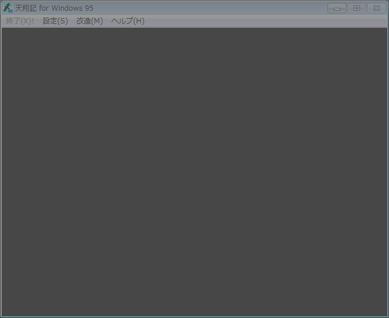

void カスタム::On_終了時() { }

int *p; void カスタム::On_起動時() { p = new int; } void カスタム::On_終了時() { delete p; }
HMODULE pDLL; void カスタム::On_起動時() { pDLL = LoadLibrary("MyCustomMode.dll"); } void カスタム::On_終了時() { FreeLibrary(pDLL); }